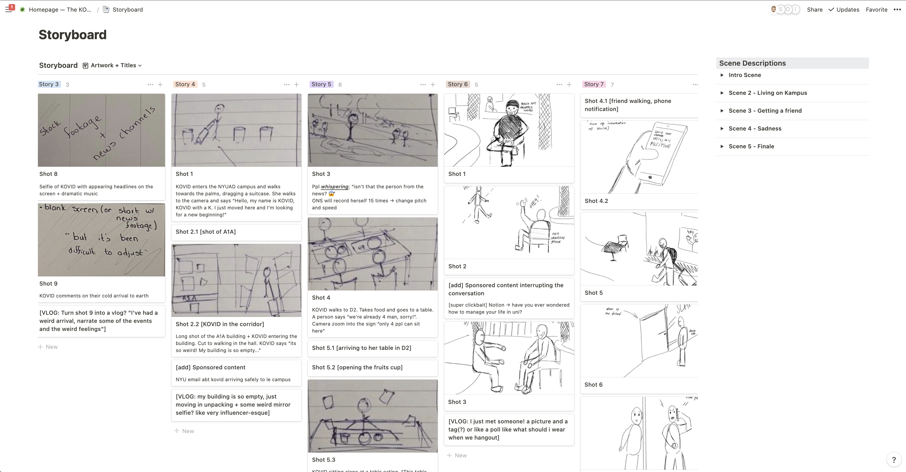
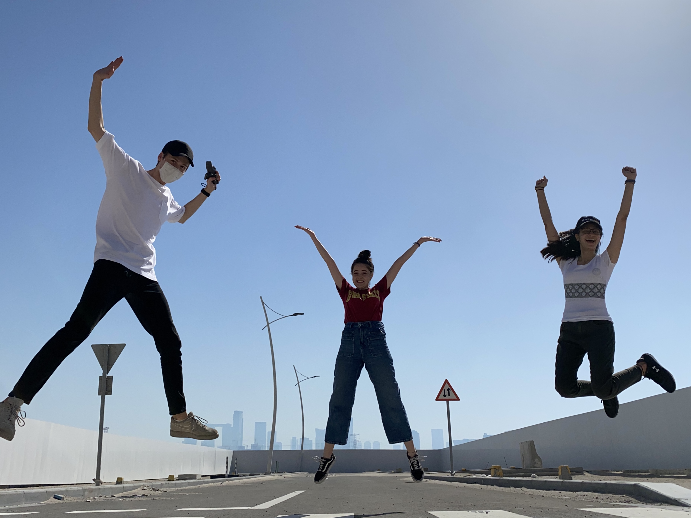

Energetic Matcha for #insta
Exciting and memorable, this matcha latte is nothing like you've tasted before. By using ceremonial grade matcha powder, our chef has refined a unique morning essential, that will wake you up, without needing coffee.
It is even better when shared with others #crowded-places.
A message from the connoisseur
Introduction
For our project, we wanted to play on themes of social media and cliche/overdone influencer culture. For a twist, we decided to choose an unexpected protagonist - Kovid with the K (with reference to the most popular reality TV family) and made up a plot about their struggle with adjusting on Earth. This is a comedic film, meant to condense emotions and bring entertainment, while adapting to the low-attention span internet audience.
Filming & Editing
We planned out every shot and created storyboards to make the shooting process much easier. We created the sets for some of the scenes, like making the lighting of the lounge completely red for the first scene. We shot the entire film using two iPhones (#sponsored), two tripods and a gimbal.
We went to different locations on campus as well as a road a few minutes off campus. We shot a majority of the film over a span of three days, while the vlogs were shot one at a time over a week.
The editing was done across two software platforms- Premiere Pro and Final Cut Pro. Different aspects were edited in both these softwares and were then combined to create one edit. We attempted to follow through with the influencer vibe through the use of hashtags, geo tags, and stickers. The music was also chosen carefully to go with the emotion at that point of the film. To break the monotony of following the film, we decided to add some advertisements that popped up randomly in the middle, like in instagram.
The “Vlogs” or short speech stories and stills were created on Instagram and then the orientation was fixed to be horizontal. For this, we looked at influencer instagram profiles to find filters and stickers that we can use to make the vlogs as believable as possible. Quite an unlikely research process, but it helped!
Design Choices
You might notice from our website that the color red is quite prominent. We used it as a signifier for everything related to our protagonist. She was wearing red, with red eyeliner in most scenes, and anyone who interacted with her in close proximity suddenly had their clothing turn red.We maintained this theme in our website as well, having an overall red theme using gradients and redesigning the Instagram logo to suit our “Kovidgram” brand.Besides the color, we also wanted to incorporate a lot of circles because covid is commonly known as a “circular” virus, which worked great with the Instagram story layout.
The Website
For the design of the website, we decided to go, first, for a login page, that then leads you to the main feed of Kovid. There, you are able to see his posts/stories. You can opt to view whichever story you want by clicking on it, and you can navigate through the stories with the “next” and “previous” buttons. You can also choose to click on just one story and let the rest play automatically. When all the stories have finished playing, the story screen/ video player will close automatically as well. You can close this screen at any time by using the (x) button on the top right, and you can also pause and play the stories by clicking on the video. A lot of hardcoding was done to get this to work, since each video has to be played and paused individually when clicking on the stories, or when clicking on the next and prev arrows. The main issue we have with the website is that some parts are not responsive. I had to use absolute positioning for some elements to get them in the exact correct spot which made it hard to make them responsive. One example of this are the tags at the end of the last story that take you to our Instagram pages. These were added to the video in the editing process, so I had to place transparent rectangles on top of them to make them clickable. Resizing the window might mess up the interactivity for this part specifically.
Final Reflections
This was a really fun project to work on for all of us! What started as a ridiculous unrealistic idea was actually turned into reality and we did not expect it to come together this well! This of course came after a lot of confusion regarding the concept and the presentation. We went from an initial idea of having a TV-style reality show to bringing this social media concept in to make it make more sense and to make the interaction more enjoyable and make more sense to the user.

